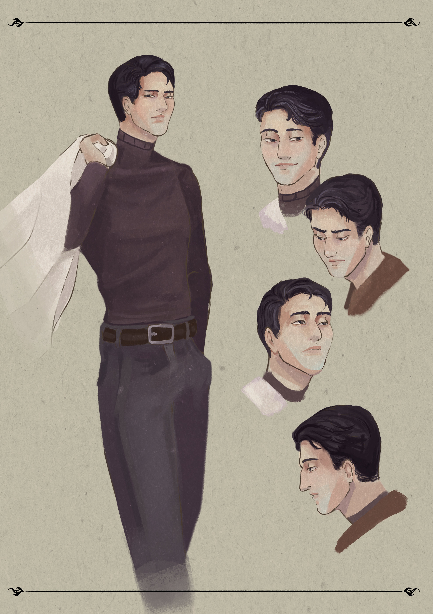
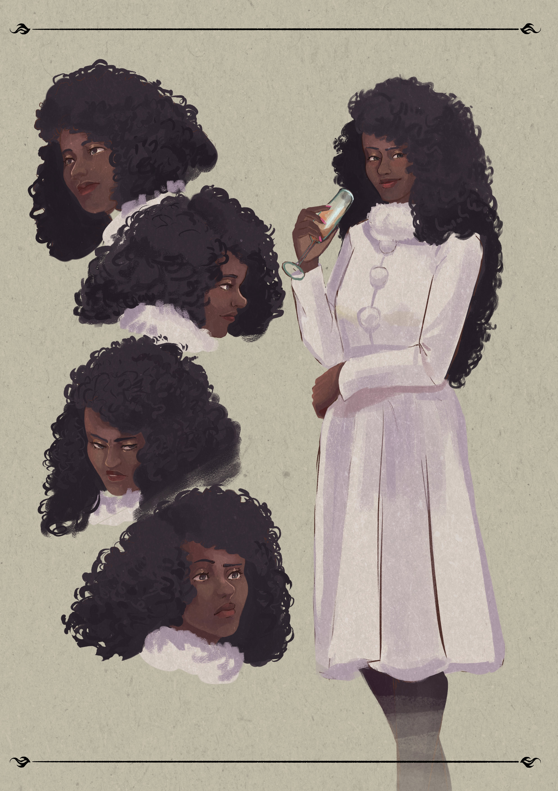
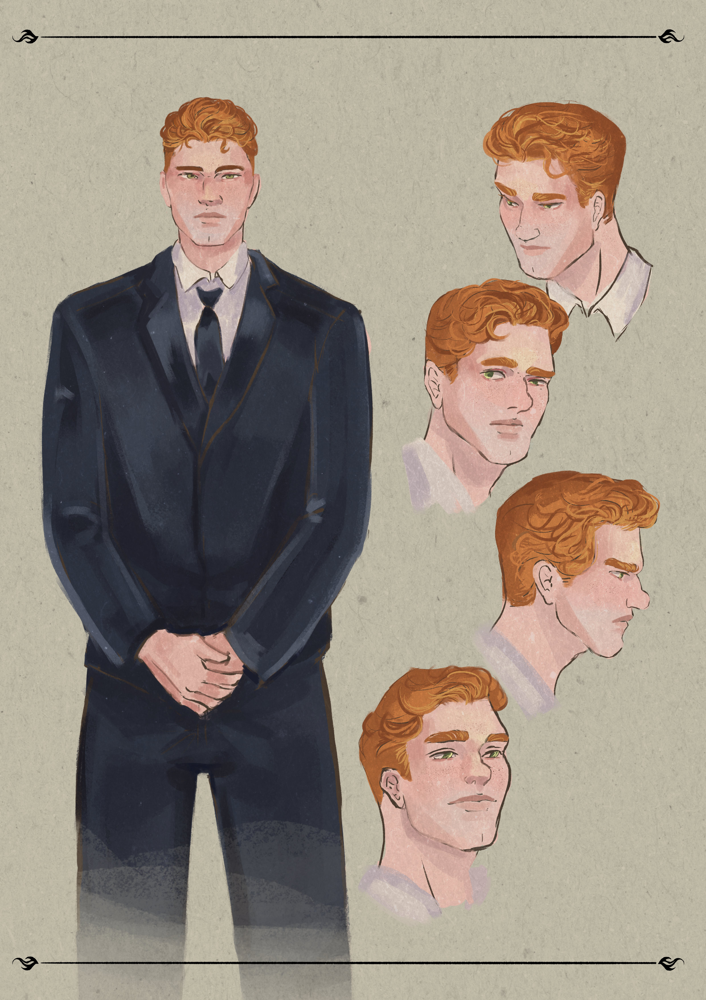

IMPÉRIO DE CINZAS
UM ROMANCE DE CAMILLA SALES

UM ROMANCE DE CAMILLA SALES
Com 400 páginas, múltiplos pontos de vista e cinco protagonistas marcantes, Império de Cinzas é o início de uma duologia distópica que questiona o preço da sobrevivência e a natureza da verdade.
Em um mundo consumido por "incêndios infinitos", a ilha de Prometheus é o último refúgio da humanidade.
Um paraíso artificial erguido e governado com mão de ferro por três famílias fundadoras:
Os Wright, os Verídion e os Jacob.
A Narrativa começa no 50° aniversário do Império, quando a explosão da Grande Fonte, o purificador de ar que simboliza a salvação, revela uma rachadura sob o verniz de sua perfeição.
Em um futuro distópico tomado por incêndios incontroláveis, a humanidade se estabelece em seu único refúgio. Prometheus, uma ilha protegida da destruição do antigo mundo, onde um Império surge trazendo com ele a promessa de um recomeço. Mas quando terroristas ameaçam a paz das famílias Imperiais, Teruhashi, herdeira de uma das famílias, começa uma jornada para descobrir quem acendeu o primeiro fósforo.
A continuação, Cidadela de Vidro, está em andamento.




